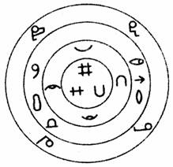

1 . 教学安排
2 . 动作分析的意义、目的与动素
 动作分析的定义、方法与目的
动作分析的定义、方法与目的
动作分析的方法
动素的名称、定义及形象符号
动素应用实例
动素性质划分
3 . 动作经济原则
4 . 动作改善
5 . 思考与练习题
 返回课程学习首页
返回课程学习首页
动素性质划分
根据对操作的影响，动素可分为有效动素与无效动素两大类。
(一)有效动素
指对操作有直接贡献者。如装配、拆卸、使用等：伸手、握取、移物及放手为操作中最常用的有效动素。
(二)无效动素(或辅助动素)
如寻找、选择、检查、持住、定位及预定位等为辅助动素；休息、故延、延迟及计划为消耗性的动素。
我国台湾的

图7-2 动素同心圆